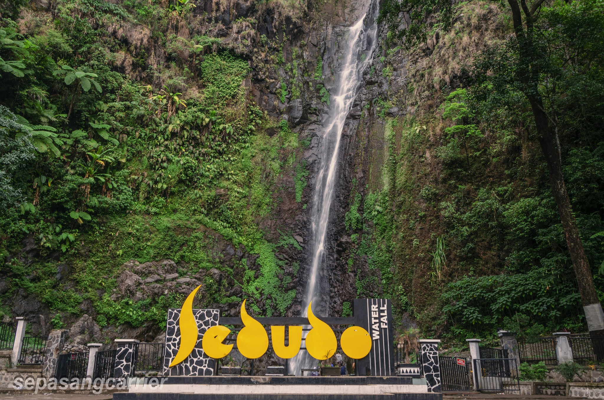
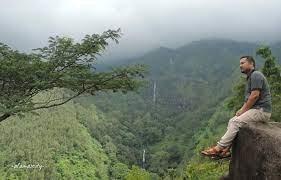

Air Terjun Sedudo
Desa Ngliman Kecamatan Sawahan, Kabupaten Nganjuk, Jawa Timur

Ketinggian : 1.428 meter
Menikmati keindahan Air terjun.
Air Terjun Sedudo adalah sebuah air terjun dan objek wisata yang terletak di Desa Ngliman Kecamatan Sawahan, Kabupaten Nganjuk, Jawa Timur.
Jaraknya sekitar 30 km arah selatan ibu kota kabupaten Nganjuk. Berada pada ketinggian 1.438 meter dpl,
ketinggian air terjun ini sekitar 105 meter. Tempat wisata ini memiliki fasilitas yang cukup baik, dan jalur transportasi yang mudah diakses
Lihat Lokasi disini
Watu Lawang
Desa Ngliman Kecamatan Sawahan, Kabupaten Nganjuk, Jawa Timur

Ketinggian : 1.500 mdpl
Menikmati keindahan Beberapa Air terjun diatas bukit.
Kabupaten Nganjuk memiliki banyak potensi wisata, terutama di daerah pegunungan. Bagi pembaca yang menyukai tempat wisata bertemakan alam,
kalian bisa datang ke wisata Watu Lawang. Lokasinya di Desa Ngliman, Kecamatan Sawahan.
Wisata Watu Lawang Nganjuk merupakan destinasi yang baru dibuka untuk umum pada 2017. Dari tengah kota, jaraknya sekitar 30 kilometer.
Dengan kendaraan roda dua memerlukan waktu sekitar 49 menit, namun jika menggunakan roda empat memakan waktu setidaknya 52 menit.
Lihat Lokasi disini
Bukit Surga
Bareng, Sawahan, Nganjuk, Jawa Timur
Total Suara : - meter
Berkemah dan menikmati keindahan alam
Nganjuk menawarkan tempat berlibur yang sanat indah dan berada di ketinggian, sangat rekomended untuk dikunjungi.
Namanya adalah Bukit Surga Bareng.Di sini kalian bisa berkemah sambil menikmati pemandangan di sekeliling Bukit Surga Bareng.
Cocok sekali bagi para petualang yang suka tantangan..
Lihat Lokasi disini